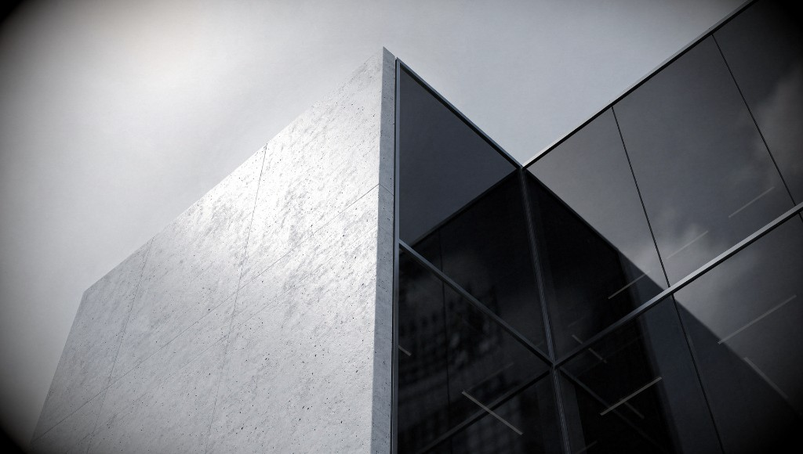
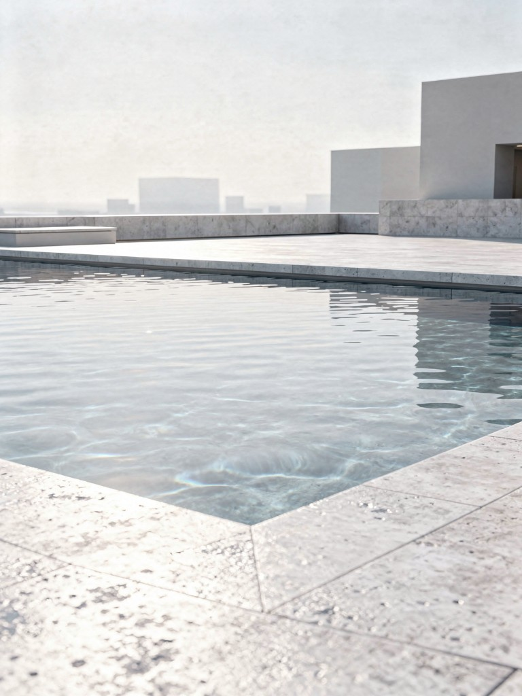
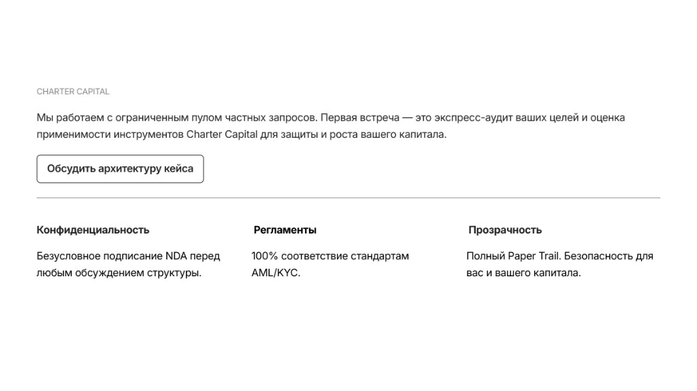

Транзитные узлы ОАЭ
Юрисдикции Ближнего Востока включены в «серые» списки. Наличие структуры в ОАЭ в цепочке транзакций автоматически поднимает красный флаг в системах AML.

Смена международного статуса ваших активов через прозрачную для западных банков инвестиционную структуру

Западный комплаенс работает просто: если происхождение капитала невозможно верифицировать по международным стандартам — его не существует.
Ни договоры, ни декларации, ни нотариальные заверения из РФ сами по себе не формируют того, что банки называют Paper Trail — последовательной, логически связанной документальной истории.
Проблема в том, что использование «серых» маршрутов — виртуальных активов (криптоактивов) или транзитных счетов в ОАЭ — мгновенно обнуляет легальность ваших документов. Для банковской системы Великобритании и ЕС такие пути являются критическими «красными флагами».
Инструменты, которые раньше решали задачи, сегодня превратились в маркеры, закрывающие доступ к мировой финансовой системе навсегда»
Юрисдикции Ближнего Востока включены в «серые» списки. Наличие структуры в ОАЭ в цепочке транзакций автоматически поднимает красный флаг в системах AML.
Конвертация через нерегулируемые цифровые каналы не имеет банковского подтверждения. On-chain история не является легитимным доказательством для комплаенса.
Договоры и контракты без реального экономического присутствия (Substance) больше не принимаются как Source of Wealth.

Вход в частный инвестиционный холдинг, созданный для владения реальными активами в Азии.
Операционная деятельность формирует реальный и проверяемый след в white-list юрисдикции.
Доход и возврат капитала с безупречным Paper Trail, который принимается международной банковской системой.
Согласно руководству IRAS (Налоговое управление Сингапура), иностранные доходы и прибыль, не переведенные в Сингапур, не подлежат налогообложению в рамках Section 10L.
Каждый этап — это независимый юридический протокол с верифицируемым транзакционным следом и документальным подтверждением результата.
Подписание инвестиционного меморандума и договора участия с сингапурским холдингом. Упрощенный внутренний KYC/AML аудит подтверждает легитимность намерений инвестора.
Операционное управление активом: арендные потоки, управление фондом недвижимости и формирование реального экономического следа.
Распределение капитала в целевой портфель курортной недвижимости Пхукета. Сделка фиксируется через холдинг с полной транзакционной историей.
Выплата инвестиционного дохода и возврат тела капитала (Exit) на зарубежный счет с документально подтвержденной биографией активов.

Инвестиция в курортную недвижимость Азии (Пхукет) — это не просто размещение капитала. Это создание реального экономического присутствия (Economic Substance), подтвержденного документами и операционной деятельностью.
Сделка фиксируется в государственном реестре (Land Department), имеет рыночную оценку и прозрачную структуру финансирования.
Актив генерирует подтвержденный арендный или операционный доход и верифицируемую историю входящих потоков.
Проектируемая структура служит основой для долгосрочного международного капиталооборота и управления семейным состоянием.
Результат работы Charter Capital — это не про доход. Это создание вашей безупречной финансовой репутации и истории капитала, понятной крупному банку мира.
Деньги без внятного происхождения. Постоянные объяснения с комплаенсом, риск блокировок и статус «нежелательного клиента» в престижных юрисдикциях.
Прозрачный и задокументированный поток прибыли. Вы становитесь «белым» инвестором с понятным источником богатства.

Мы объединили физическую надежность недвижимости Пхукета с правовыми преимуществами Сингапура. Это рабочая связка для защиты и роста вашего капитала.
Горы и джунгли занимают 70% острова. Свободной земли под премиальные проекты почти нет — «второго Пхукета» не будет.
Тайский бат — одна из самых стабильных валют мира. Ваш актив защищен от обесценивания доллара.
Доход не облагается налогом в Сингапуре, так как генерируется вне его границ.
GIDR AI — POWERED BY DATA
Анализ 10,000+ параметров — от темпов выдачи разрешений до кредитных рейтингов девелоперов — позволяет находить ликвидные активы раньше, чем о них узнает рынок.
